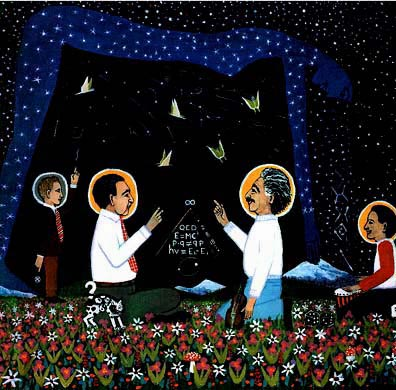

Warner Heisenberg illustrates his Uncertainty Principle by pointing down with his right hand to indicate the location of an electron and pointing up with his other hand to its wave to indicate its energy. At any instant, the more certain we are about the momentum of a quantum, the less sure we are of its exact location.
Neils Bohr gestures upward with two fingers to emphasize the dual, complementary nature of reality. The unobserved quantum is both a wave and a particle, but any experiment can only show one form or the other. Bohr argued that theories about the universe must include a factor to account for the effects of the observer on any measurement of quanta. Bohr and Heisenberg argued that predictions in quantum mechanics are limited to statistical descriptions of group behavior. This made Einstein declare that he could not believe that God plays dice with the universe.
Albert Einstein holds up one finger to indicate his belief that the universe can be described with one unified field equation. Einstein discovered the relativity of time and the mathematical relationship between energy and matter. He devoted the rest of his life trying to formulate a unified field theory. Even though we must now use probabbilities to describe quantum events, Einstein expressed the hope that future scientists will find a hidden order to quantum mechanics.
Richard Feynman plays the bongo drums, with Feynman diagrams of virtual particles rising up like music notes. He invented Quantum-Electro-Dynamics, the most practical system for solving problems in quantum mechanics. Feynman renormalized the infinities that had prevented exact solutions of quantum equations.
Schrodinger's cat is winking and rubbing up to Bohr. The blue woman arching over the earth is Nut, the Sky Goddess of Egypt. She has just thrown the dice behind Einstein's back. Nut is giving birth to showers of elementary particles which cascade over the butterflies of chaos.
Click here to see this published in a magazine.
David B. Martinez © 1994